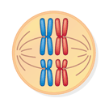
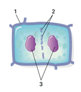

Reviewing Concepts
Multiple Choice
Choose the letter of the best answer.
1. Which of the following processes occurs in eukaryotic organisms that only reproduce asexually?
a. mitosis
b. meiosis
c. both mitosis and meiosis
d. fertilization
2. Which of the following is a key event during the S phase of the cell cycle?
a. The genetic material is duplicated.
b. A cell grows in size.
c. The number of organelles increases.
d. The cytoplasm is divided in two.
3. The cytoplasm is divided into two daughter cells during
a. metaphase.
b. prophase.
c. cytokinesis.
d. anaphase.
4. Which of the following steps occurs during prophase in mitosis?
a. Sister chromatids separate.
b. Nuclear envelope disappears.
c. Nuclear envelope reappears.
d. Chromosomes undergo duplication.
5. The spread of cancer cells beyond their original tumor site is called
a. mitosis.
b. fertilization.
c. cytokinesis.
d. metastasis.
6. The products of meiosis from one parent cell are
a. two diploid cells.
b. four chromosome pairs.
c. four haploid cells.
d. two haploid cells.
7. How many possible chromosome combinations are there for the gametes of an organism with a haploid number equal to 4?
a. 22 = 4
b. 28 = 256
c. 21 = 2
d. 24 = 16
Short Answer
8. Give three examples of organisms that reproduce asexually.
9. Describe four events that happen in a typical cell during interphase.
10. Identify the two major events that occur during the mitotic phase of the cell cycle.
11. What is the function of the spindle during mitosis?
12. Explain how cancer tumors spread.
13. Describe the most obvious way the karyotypes of a sister and brother look different.
14. Explain how having a haploid number of chromosomes contributes to the function of gametes in a life cycle.
15. Describe the structure of a tetrad. When do tetrads form?
16. Describe one similarity between mitosis and meiosis II. Describe one difference.
17. Name two factors that introduce genetic variation during the process of meiosis. Explain how they introduce variation.
Visualizing Concepts
18. The diagram below represents metaphase I of meiosis in a cell that has two pairs of homologous chromosomes. Using colored pencils or pens, draw a similar diagram to show how the chromosomes would look if the cell were in metaphase of mitosis.

Applying Concepts
Analyzing Information
19. Analyzing Diagrams Use the diagram below of a cell undergoing cytokinesis to answer the following questions.
a. Does the diagram show a plant cell or an animal cell? Explain.
b. Identify each of the numbered structures in the diagram.
c. Draw and label a diagram of the final step in this process.

20. Analyzing Photographs Strawberry plants, such as those shown in the photograph below, can reproduce by a process in which an existing plant sends out tiny new plants on long, trailing stems. These new plants grow roots when they come in contact with soil. If the trailing stems are severed, the separated plants become completely independent of the parent plant.
a. Is the process in strawberry plants an example of asexual or sexual reproduction? Explain your answer.
b. Which process, mitosis or meiosis, is involved in producing the trailing stems, leaves, and new roots?
c. How do the new strawberry plants compare genetically to the original plant?

Critical Thinking
21. Developing Hypotheses The cells of organisms called plasmodial slime molds have multiple nuclei. Suggest how a variation on the cell cycle could give rise to such a situation.
22. Comparing and Contrasting How are the growth of a malignant tumor and the repair of a cut on your finger similar? How are they different?
23. Making Judgments Suppose you read about a study that relates exposure to a certain chemical to an increased risk of cancer in rats. What types of effects at the cellular level do you think the researchers observed? Would you expect to observe similar effects in humans exposed to the chemical? Why or why not?
24. What's Wrong With These Statements? Briefly explain why each statement is inaccurate or misleading.
a. The first stage of mitosis is the duplication of the chromosomes.
b. Every cell of a sexually reproducing organism has the same number of chromosomes.
c. Cells spend most of their time in the mitotic (M) phase of the cell cycle.
Performance Assessment
Writing Like animals, plants can get malignant tumors. (Such tumors cannot metastasize, however, because plant cells do not move about.) Apply what you learned about cytokinesis in plants to hypothesize a way to stop the growth of a plant tumor. What would the side effects be? Would your method work on certain kinds of plants better than others?